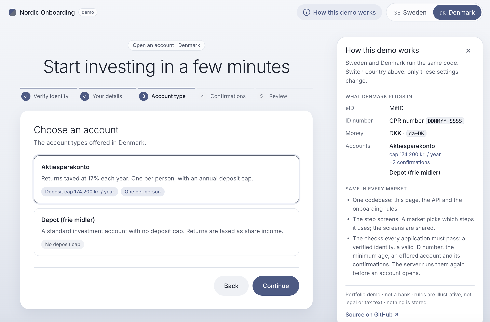
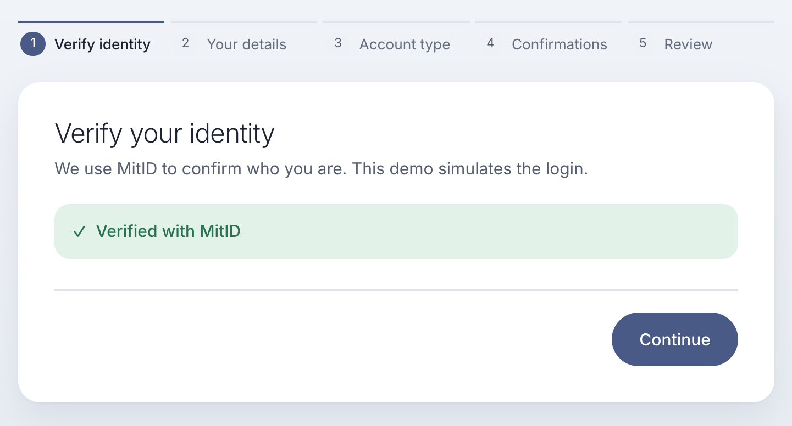
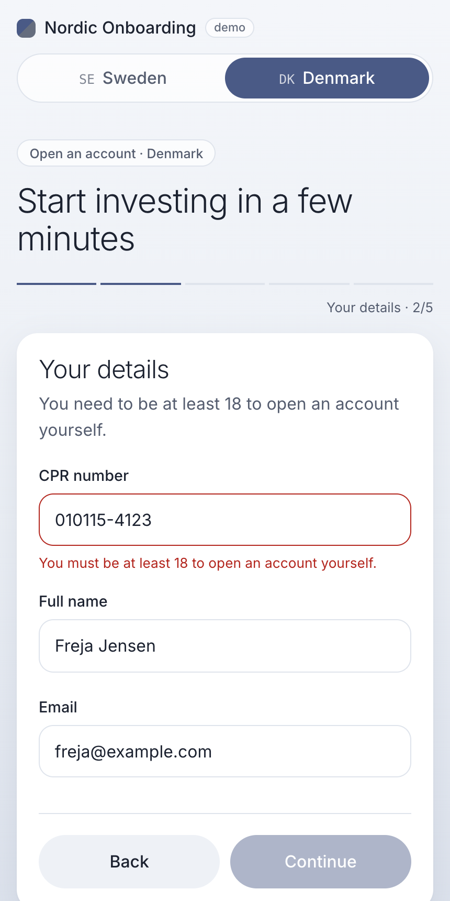
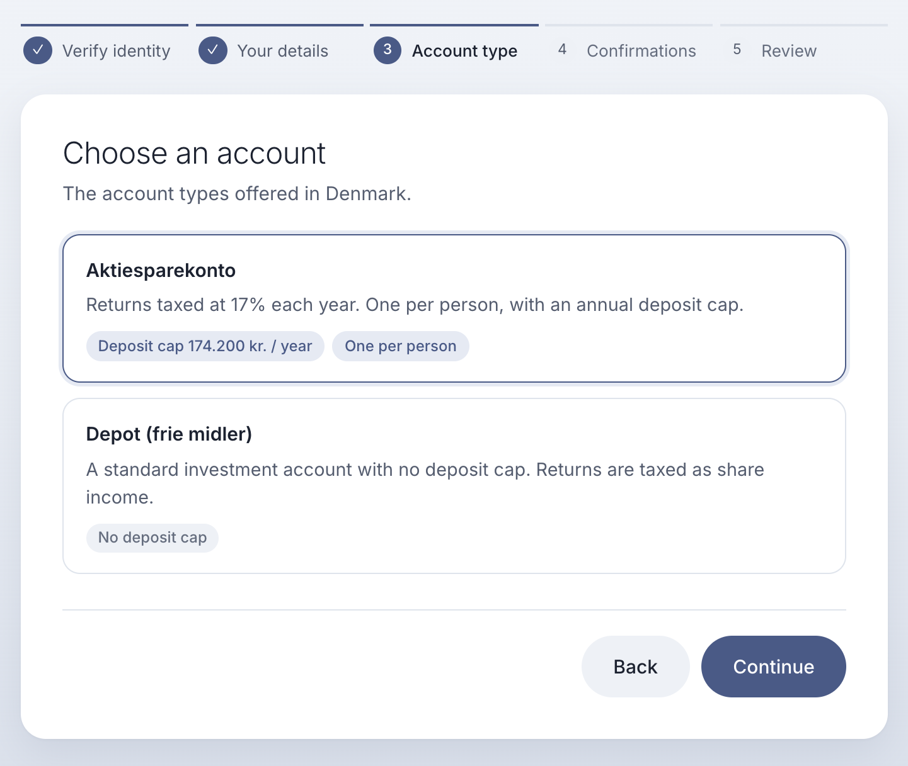
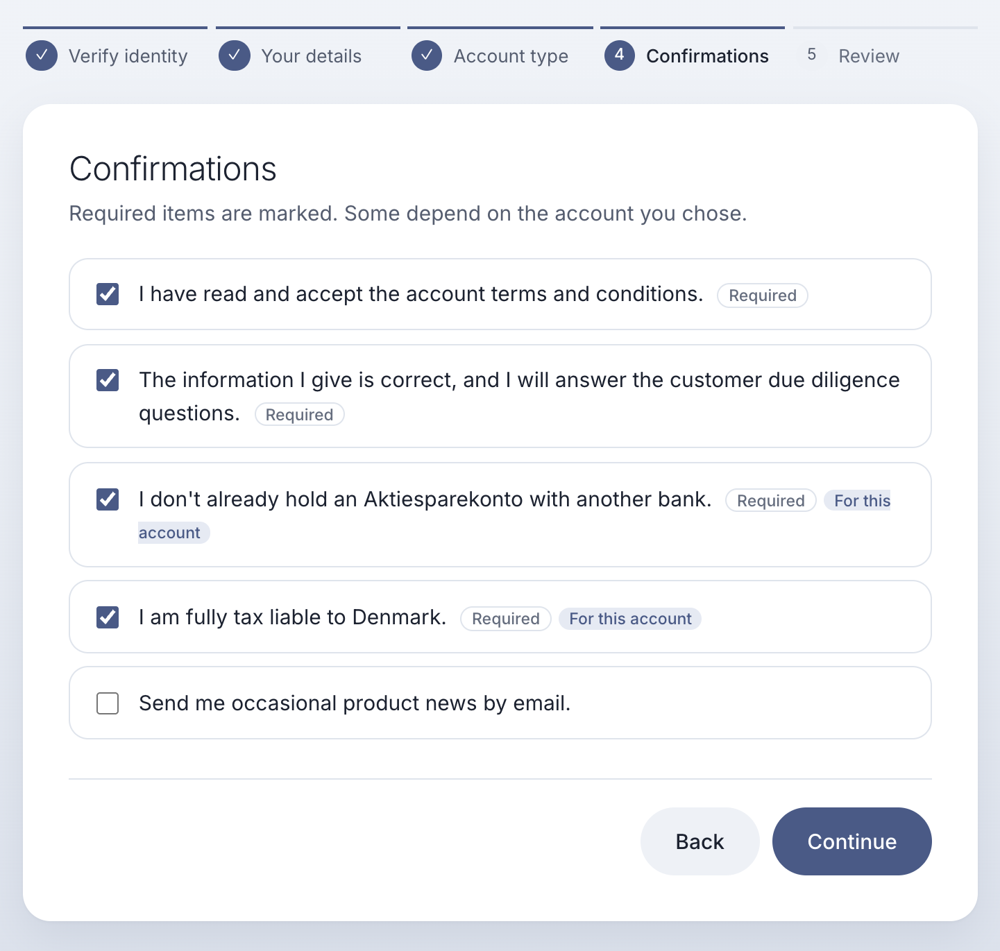
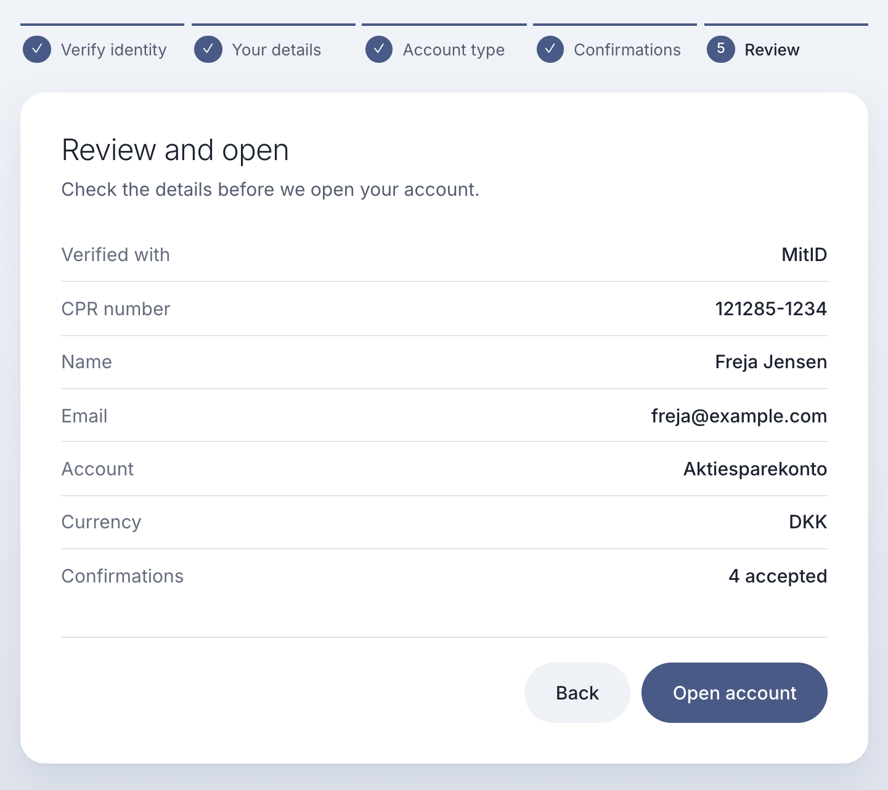
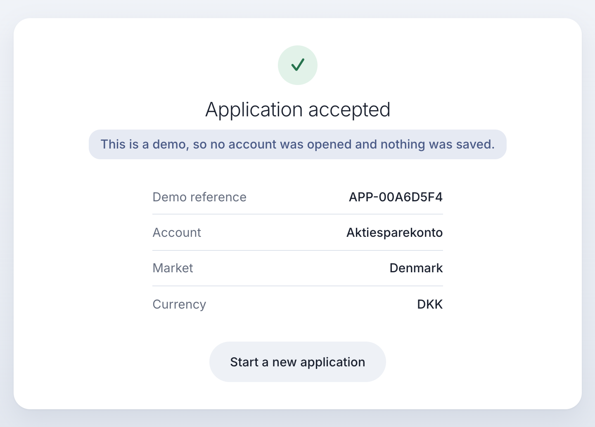

A technical guide
Account opening for a Nordic savings and investment platform that launches in a second country without forking the code. Sweden and Denmark use one onboarding flow, and everything that is different between them lives in a market module.

Each chapter starts with a short summary and one diagram, so reading only the first page of each chapter already gives the whole picture. The pages after that go into detail.
The rounded links marked Where to look open the matching code on GitHub. Every endpoint, message and JSON body in this guide is taken from the code or from the live demo's answers.
One Danish application, end to end
This chapter follows one Danish account application from the click in the browser to the server's answer and back. Sweden takes exactly the same path through the same code. Only the market's data and its ID-number rule are different.
Four kinds of API call make up the journey. The browser checks what it can, for speed. The server checks everything again at the end, because anyone can skip the browser and send requests to the server directly.
sequenceDiagram
autonumber
participant B as Browser (Angular app)
participant A as REST API (MarketController)
participant S as OnboardingService
B->>A: GET /api/markets
A-->>B: 200 the live markets, SE and DK
B->>A: GET /api/markets/DK/onboarding
A->>S: config(DK)
A-->>B: 200 Denmark's whole flow, as data
B->>A: POST /api/markets/DK/identity/sessions
A->>S: startIdentitySession(DK)
A-->>B: 200 a session id. Event VERIFIED
Note over B,S: Once the CPR number is complete, and again after each change
B->>A: POST /api/markets/DK/national-id/check
A->>S: checkNationalId(DK, value)
A-->>B: 200 valid, or a message
B->>A: POST /api/markets/DK/applications
A->>S: submit(DK, application)
A-->>B: 201 accepted, or 422 with reasons
GET /api/markets, then
GET /api/markets/DK/onboarding
POST /api/markets/DK/identity/sessions
POST /api/markets/DK/national-id/check
POST /api/markets/DK/applications
The market code is part of every URL, so every market uses the same endpoints and the
same controller. For Sweden, the same four calls use SE instead of
DK: GET /api/markets/SE/onboarding, and so on. The same code
handles them, and MarketRegistry hands it Sweden's rules instead of
Denmark's. There is no Sweden-only or Denmark-only endpoint.
A 404 is a standard problem detail (RFC 9457), from the live demo:
{ "title": "Not Found", "status": 404, "detail": "Market not available: NO",
"instance": "/api/markets/NO/onboarding" }
The browser loads the Angular app from the same server, or from the service worker's cache on a repeat visit. The service worker is a small script the browser installs for this site. It keeps a copy of the app's files on the person's device, but never the API's answers.
The app asks which markets are live with GET /api/markets, and draws the
Sweden/Denmark switch from the answer. A link ending in #dk picks Denmark,
and GET /api/markets/DK/onboarding returns the whole flow as data:
{ "code": "DK", "displayName": "Denmark", "locale": "da-DK", "currency": "DKK",
"identityProvider": { "id": "mitid", "displayName": "MitID" },
"nationalId": { "label": "CPR number", "placeholder": "DDMMYY-SSSS",
"pattern": "^\\d{6}-?\\d{4}$", "example": "121285-1234" },
"minimumAge": 18,
"steps": ["IDENTITY", "PERSONAL_DETAILS", "ACCOUNT_TYPE", "DISCLOSURES", "REVIEW"],
"products": [
{ "id": "aktiesparekonto", "depositCap": 174200, "onePerPerson": true, … },
{ "id": "depot", "depositCap": null, "onePerPerson": false, … } ],
"disclosures": [
{ "id": "terms", "productId": null, "required": true, … },
{ "id": "ask-tax-liable", "productId": "aktiesparekonto", "required": true, … }, … ] }
Trimmed from the live answer: some fields and confirmations are left out.
Aktiesparekonto's yearly cap is looked up for the current year in Copenhagen time: 174,200 DKK in 2026. A new year's cap is one more entry in a map, not new code.
The Angular app shows what the configuration describes, for any market.
Choosing another market clears the message and shows that market.
Where to look: DenmarkMarket.javaonboarding-flow.ts
"Continue with MitID" sends POST /api/markets/DK/identity/sessions.
Session here means an eID login session on the server, not a browser
session or a cookie, and this call is the identity check, simulated. In a real
system the person would sign in at MitID, and MitID would send back a signed proof for the
server to verify. Here, the call pretends that succeeded.
The server creates a session id, remembers in memory that it belongs to Denmark, records
a VERIFIED event, and answers:
{ "sessionId": "sim-mitid-ccebc1b9-2b1a-4a9e-9407-abe52dfb0fd9" }
It is the proof of login. The browser keeps it in memory and sends it with the application. The server then checks that it exists and belongs to Denmark, and deletes it once an application is accepted.
It lives in the server's memory. A restart or a new release forgets it, and the person is asked to log in again. That is also why the service runs one instance.

flowchart LR
K["Keystroke"] --> F{"Complete
format?"}
F -- "yes" --> W["Wait 350 ms"]
W --> C["Server check
CprRule + age"]
C --> M["Looks good.
or the reason"]
F -- "not yet" --> H["A hint only
no server call"]
In the browser, the format pattern from the configuration is checked on every keystroke, for instant feedback. Only when the field holds a complete number in the right format, and 350 ms after the last keystroke, does the browser ask the server. It doesn't wait for the person to leave the field. A new keystroke cancels a check that is still waiting, and the same number is never sent twice.
On the server, Denmark's CprRule reads the number: the
format, the century from the 7th digit, a real date, and not a date in the future. It
deliberately has no modulus-11 check, an old checksum for CPR numbers. Denmark stopped
guaranteeing it in 2007, so the check would reject real people.
Then comes the shared rule, written once for every market: the person must be at least 18 on today's date in Copenhagen.
{ "valid": false,
"message": "You must be at least 18 to open an account yourself." }
Each rejection records an ID_REJECTED event with a reason code, such as
ID_UNDER_AGE.
Where to look: CprRule.java

The account type is chosen in the browser, from the configuration: Aktiesparekonto or Depot. No call is needed, because the configuration already holds both, with this year's deposit cap.
Aktiesparekonto adds two confirmations, marked For this account: "I don't already hold an Aktiesparekonto with another bank" and "I am fully tax liable to Denmark". Switching account type drops confirmations that no longer apply, and Continue stays disabled until every required one is ticked.


The browser sends POST /api/markets/DK/applications with:
{ "identitySessionId": "sim-mitid-ccebc1b9-…",
"nationalId": "121285-1234",
"fullName": "Freja Jensen",
"email": "freja@example.com",
"productId": "aktiesparekonto",
"acceptedDisclosures": ["terms", "kyc", "ask-one-per-person", "ask-tax-liable"] }
Everything the browser checked along the way, it checked for speed. The server now checks all of it again.

flowchart LR CR["Cloud Run
europe-north1"] --> MC["MarketController
HTTP only"] MC --> OS["OnboardingService
shared rules"] OS --> MR["MarketRegistry
404 if DK is off"] MR --> DM["DenmarkMarket
+ CprRule"] OS -.-> EV["Events
codes only"]
The request passes through layers that each have one job. The controller only speaks
HTTP. OnboardingService holds the rules every market shares.
MarketRegistry turns DK into Denmark's market module, or
answers 404 if Denmark is switched off. The market module supplies Denmark's data and
its ID rule.
Where to look: OnboardingService.java
Events: SUBMITTED, then either ACCEPTED, or
REJECTED with the first failed check as its reason.
{ "accepted": true,
"applicationId": "APP-00A6D5F4",
"marketCode": "DK",
"productId": "aktiesparekonto",
"currency": "DKK",
"errors": [] }
{ "accepted": false, …
"errors": [ {
"field": "nationalId",
"code": "ID_UNDER_AGE",
"message": "You must be at least 18
to open an account yourself." } ] }

Network failure during the submit: the browser shows "Something went wrong. Please try again."
Switching market while a request is waiting cancels it in the browser, so Sweden's screen never receives Denmark's answer. The server may already have handled it, but nothing is stored either way.
There is no database. The login session lives only in the server's memory.
Events carry codes only: market, step, outcome, reason. Anything that looks like an ID number is masked in every log line.
The service worker keeps the app itself, never market configuration, so a switched-off market can't be shown from a cache.